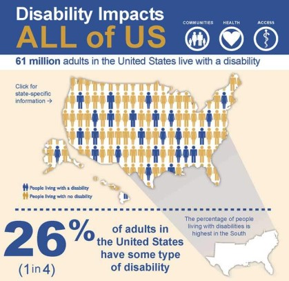

Who Do We Have in Mind When Developing Accessible Content?
When developing digital content with accessibility at the forefront, it is crucial to grasp the full scope of disability: what disabilities are, who they affect, and how they do so. By possessing an in-depth knowledge of disability, we can more intentionally implement accessible design while understanding the potential effects of our choices.
What is Disability?
When conceptualizing disability, two main models are commonly used:
The medical model claims that there are “thresholds” for normal functioning, and a person is considered disabled if they “fall below one of these thresholds”1. This model is most relevant in terms of medical diagnoses and policymaking.
The social model claims that people are “disabled by their environment” rather than any physical deficiency, focusing instead on the ways our society and its infrastructure prevent disabled individuals from successfully navigating them2. This model promotes the capability and personhood of those who are disabled by placing fault on the way man-made spaces are designed and not on any person's inability to conform to the requirements of the space. Thus, the social model can be a more useful model for framing the work of accessibility than the medial model; by shifting responsibility onto the infrastructure, those of us who design this infrastructure (both physical and digital) are obligated to take greater care and consideration in making sure our work is as inclusive as possible.
Who Do Disabilities Affect?
If you’re an abled individual like me, you may also find it easy to underestimate how widespread disabilities are.
For reference, ~26-29% of adults in America claim to have some type of disability3. Some people may claim that accessibility doesn’t actually matter to that many people, but this statistic shows that over a quarter of the U.S. population is directly impacted by the design decisions we make.
In addition to the overall population statistics, certain factors disproportionately affect the rates of disabilities in various groups. For example, disabilities are more common with age. In 2020, while the national average was 25.7%, the CDC reports 41.7% disability prevalence in individuals age 65 and older. Poverty is also a significant factor, with people who live below the poverty line being “2 to 3 times as likely to identify as disabled”4. By designing accessibly, we can make our content available to a more diverse range of individuals and work towards a more inclusive internet landscape.

What Types of Disabilities Are There?
Disabilities are commonly split into six categories based on the functions they inhibit:
-
Sensory - affects one's ability to see, hear, or feel.
-
Physical - affects one's mobility, dexterity, or stamina.
-
Intellectual - affects one's cognitive capabilities.
-
Developmental - affects one's ability to acquire and contextualize knowledge.
-
Neurological - affects one's nervous system.
-
Psychological - affects one's emotional wellbeing.5
It’s important to note that not all disabilities are obvious to an outside observer. Disabilities can be invisible yet have a significant impact on the disabled individual. Also, not all disabled individuals are born with their disabilities, and not all disabilities are lifelong. Disabilities can be acquired later in life, with some only being temporary or applying only in certain situations.
Content written by Dylan Fisk.
*AI Statement: I did not use generative AI in any way, shape, or form throughout the creation of this content.